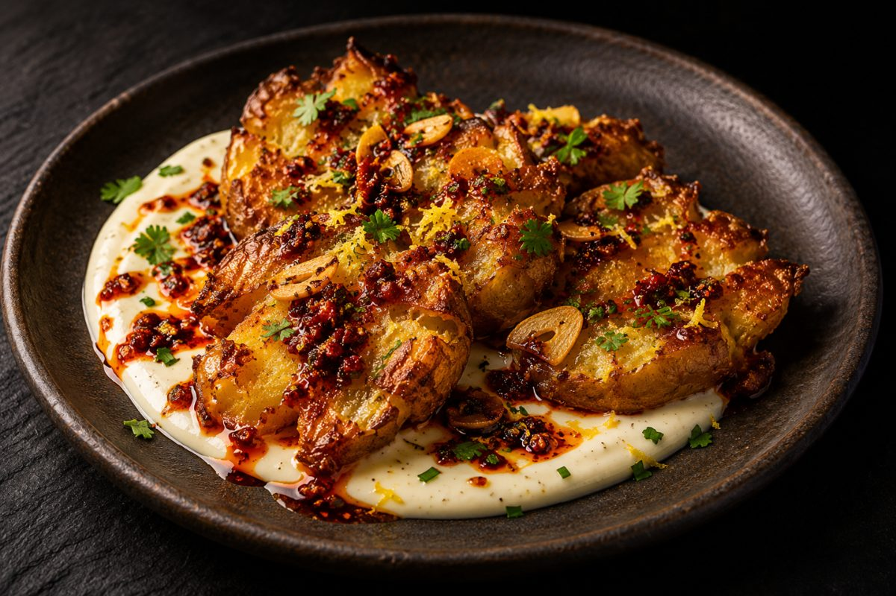

GC — 01 · Chili Garlic Crisp «El Clásico»
Papas aplastadas crocantes con crema de limón
Papas doradas y crujientes sobre una crema fresca, con el picor del crunch por encima. Para compartir, aunque no sea obligatorio.
Ingredientes
- 6 papas pequeñas
- 3 cucharadas de yogur natural sin azúcar
- 1 cucharada de mayonesa
- 1 limón
- 2 cucharadas de Chili Garlic Crisp
- Sal y pimienta
- Cilantro o ciboulette
Preparación
- Cocina las papas con cáscara en agua con sal hasta que estén blandas, 15 a 20 minutos.
- Ponlas en una bandeja aceitada y aplástalas suavemente con un vaso. Agrega aceite, sal y pimienta.
- Hornea a 220 °C por 20 a 25 minutos, hasta que estén doradas y crujientes.
- Mezcla el yogur, la mayonesa, unas gotas de limón y una pizca de sal.
- Extiende la crema en un plato, pon las papas encima y termina con Chili Garlic Crisp, ralladura de limón y cilantro.
Tip de chefDeja que las papas suelten el vapor antes de aplastarlas. Mientras más seca la superficie, más crujientes quedan.